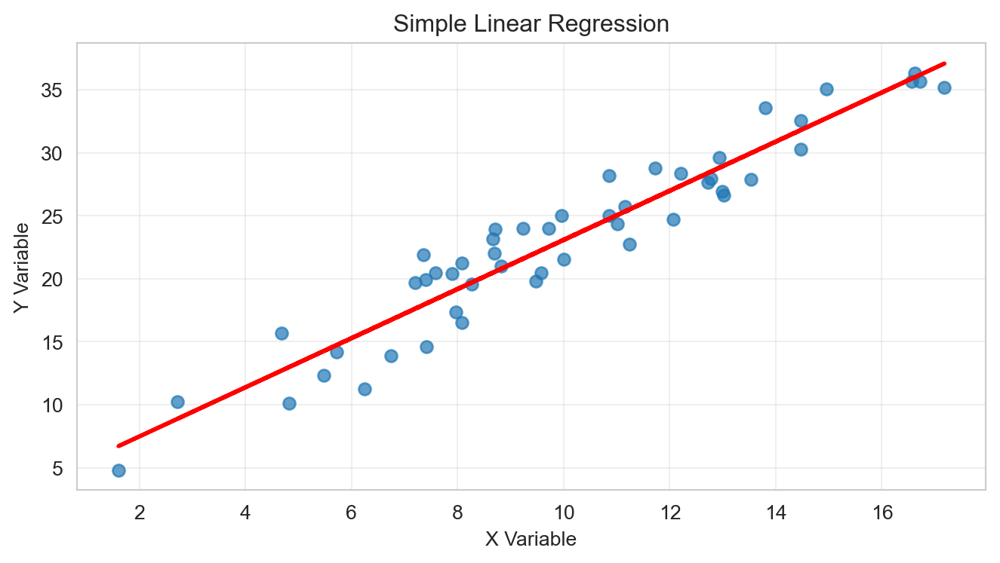
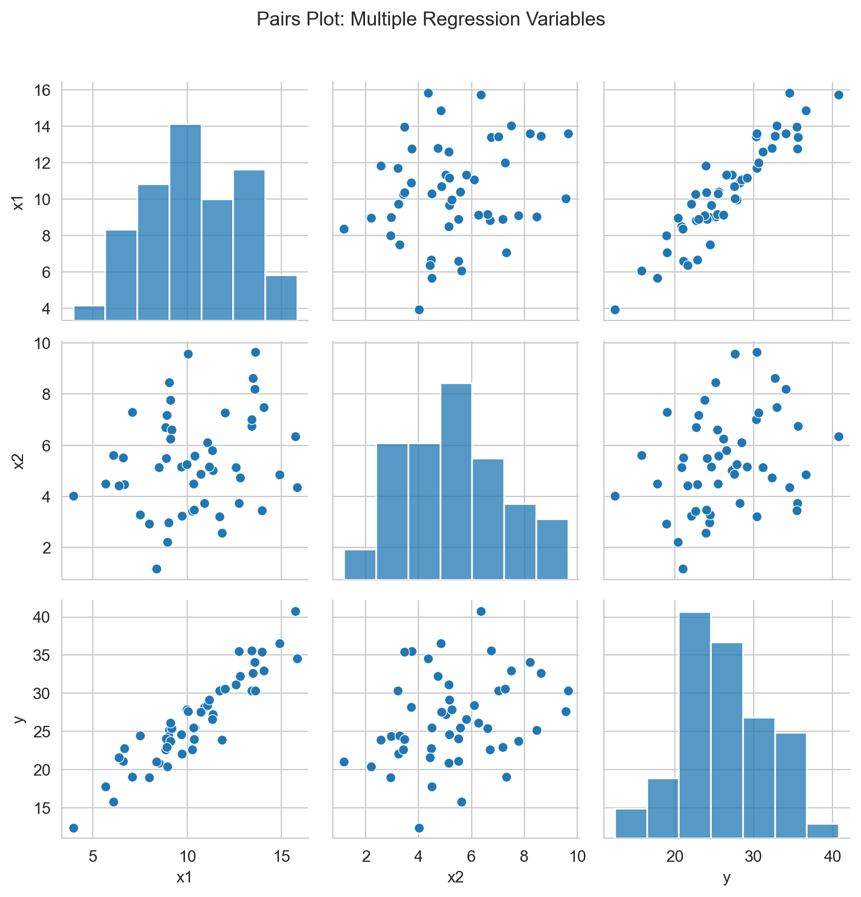

import pandas as pd
observDF = pd.DataFrame({
'Stress': [0, 0, 0, 1, 1, 1, 2, 2, 2, 8, 8, 8, 12, 12, 12],
'StressSurvey': [0, 0, 0, 3, 3, 3, 6, 6, 6, 9, 9, 9, 12, 12, 12],
'Time': [0, 1, 1, 1, 1, 1, 2, 2, 2, 2, 2, 2.1, 2.2, 2.2, 2.2],
'Anxiety': [0, 0.1, 0.1, 1.1, 1.1, 1.1, 2.2, 2.2, 2.2, 8.2, 8.2, 8.21, 12.22, 12.22, 12.22]
})Regression & Interpretability Challenge
Don’t Trust Linear Models - The Perils of Non-Linearity
Regression Challenge - Linear Model Interpretability
Important📋 What You Need To Do
Note🐍 Python Environment Setup
Before rendering, create a fresh virtual environment and install the required packages:
- Press
Ctrl+Shift+Pto open the Command Palette - Type “Python: Select Interpreter” and select it
- Click “+ Create Virtual Environment…”
- Choose Venv
- Select your Python installation (e.g., Python 3.12)
- Wait for the environment to be created and activated
Then open a terminal and install dependencies:
Windows:
py -m pip install jupyter matplotlib pandas seaborn scikit-learn statsmodelsMac:
python3 -m pip install jupyter matplotlib pandas seaborn scikit-learn statsmodels
Warning⚠️ AI Partnership Required
This challenge pushes boundaries intentionally. You’ll tackle problems that normally require weeks of study, but with Cursor AI as your partner (and your brain keeping it honest), you can accomplish more than you thought possible.
The new reality: The four stages of competence are Ignorance → Awareness → Learning → Mastery. AI lets us produce Mastery-level work while operating primarily in the Awareness stage. I focus on awareness training, you leverage AI for execution, and together we create outputs that used to require years of dedicated study.
Important📊 Grading Criteria
- Questions 1–5: Required. Up to 75% of the grade.
- Questions 6–7: Up to 85% of the grade.
- Question 8: Up to 95% of the grade.
- Question 9: Up to 100% of the grade.
Your grade depends on narrative clarity and insight, not just correct code.
Tip📝 How to Present Your Analysis
This is an investigative report, not a coding exercise. Present your findings like a professional analyst writing a brief about why we should be skeptical of regression results.
- Q&A Format: Each question clearly stated, followed by your answer with analysis, visualizations, and interpretations.
- Delete All Instructions: Remove all challenge instructions, setup guides, and grading criteria from your final rendered HTML. The final report should contain only your Q&A responses.
- Hide Code: Tell a narrative and visual story using
echo: false; the code can be referenced in your GitHub*.qmdsource file. - Plotting Convention: Put the dependent variable (Anxiety) on the vertical axis. Independent variables (StressSurvey, Stress, Time) go on the horizontal axis.
- Concise and Human: No AI babble. Tell the story of what you discovered, focus on insights, and write like a data science consultant.
What we’re looking for: A compelling 4-8 minute read that demonstrates both the power of linear models for interpretation and the critical pitfalls of over-relying on statistical significance.
Warning💾 Save Your Work Frequently!
Commit often using Source Control (Ctrl+Shift+G). Commit after completing each regression analysis, after finishing each question, and before asking AI for help with new code.
The Problem: When “Controlling For” Goes Wrong
“We need to stop believing much of the empirical work we’ve been doing.” - Christopher H. Achen
What does “control for” mean? Imagine you’re studying whether social media causes anxiety. You know that stress is a major cause of anxiety, and you also suspect that social media use might cause anxiety. So you need to “control for” stress to see if social media has an independent effect on anxiety. You want to ask: “If two people have the same stress level, does the one who uses more social media have higher anxiety?”
Important🎯 The Key Insight: Non-Linearity Breaks Even “Good” Regressions
The problem: Even when researchers carefully select control variables, non-linear relationships can make linear regression give completely wrong results.
Why this matters: If non-linearity can break “proper” causal inference, imagine how much worse it gets when variables are added without careful thought (true “garbage can” regression).
Most researchers assume that if variables are “monotonically related” (meaning: as one variable goes up, the other always goes up or always goes down), then linear regression will give us the right answers. But here’s the catch: linearity is much stronger than monotonicity.
- Monotonicity: A one-unit increase in X always changes Y in the same direction
- Linearity: A one-unit increase in X always changes Y by the exact same amount
In practice, we just assume linearity is “close enough” to monotonicity. But what if it’s not? Your challenge is to explore a simple example and show how even small non-linearities can make regression results completely wrong.
The True Relationship
We define three variables:
\[ \begin{aligned} A &\equiv \textrm{Anxiety Level measured by fMRI activity}\\ S &\equiv \textrm{Stress Level measured by cortisol level in blood}\\ T &\equiv \textrm{\# of minutes on social media in last 24 hours} \end{aligned} \]
We know the true relationship among these variables:
\[ Anxiety = Stress + 0.1 \times Time \]
Important🔍 The True Coefficients
This equation implies specific values in the multiple regression framework \(Anxiety = \beta_0 + \beta_1 \times Stress + \beta_2 \times Time + \epsilon\):
- \(\beta_0 = 0\) (intercept is zero)
- \(\beta_1 = 1\) (coefficient on Stress is 1)
- \(\beta_2 = 0.1\) (coefficient on Time is 0.1)
When you run regression analysis, you’re trying to estimate these \(\beta\) coefficients. If your regression gives coefficients very different from these true values, your model is wrong—even if it has good statistical fit! Keep these values handy as you answer every question below.
The Data
observDF| Stress | StressSurvey | Time | Anxiety | |
|---|---|---|---|---|
| 0 | 0 | 0 | 0.0 | 0.00 |
| 1 | 0 | 0 | 1.0 | 0.10 |
| 2 | 0 | 0 | 1.0 | 0.10 |
| 3 | 1 | 3 | 1.0 | 1.10 |
| 4 | 1 | 3 | 1.0 | 1.10 |
| 5 | 1 | 3 | 1.0 | 1.10 |
| 6 | 2 | 6 | 2.0 | 2.20 |
| 7 | 2 | 6 | 2.0 | 2.20 |
| 8 | 2 | 6 | 2.0 | 2.20 |
| 9 | 8 | 9 | 2.0 | 8.20 |
| 10 | 8 | 9 | 2.0 | 8.20 |
| 11 | 8 | 9 | 2.1 | 8.21 |
| 12 | 12 | 12 | 2.2 | 12.22 |
| 13 | 12 | 12 | 2.2 | 12.22 |
| 14 | 12 | 12 | 2.2 | 12.22 |
Verify for yourself that \(Anxiety = Stress + 0.1 \times Time\) holds perfectly in every row. Notice the additional StressSurvey column—a survey-based proxy for measuring stress levels without expensive blood tests. The proxy has a monotonic (and sorta-kinda linear) relationship with actual stress (see Figure 1).
Note📝 Methodological Note: The Contrived Nature of This Example
This is a contrived example designed to illustrate the dangers of linear regression:
- Blood test stress levels have a perfectly linear relationship with anxiety (by design)
- Survey stress responses have a non-linear relationship with anxiety (also by design)
In the real world, there is no reason to believe linearity holds for either measurement method. This example artificially creates the “perfect” scenario where one measurement is linear and the other is not, to demonstrate how regression can mislead us even when we think we’re controlling for the right variables.
import matplotlib.pyplot as plt
import seaborn as sns
sns.set_style("whitegrid")
plt.rcParams['figure.figsize'] = (7, 4)
fig, ax = plt.subplots()
ax.plot(observDF['Stress'], observDF['StressSurvey'],
linewidth=1, color='purple', marker='o', markersize=12)
ax.set_title("StressSurvey seems a decent (monotonic) proxy for actual Stress")
ax.set_xlabel("Actual Stress Level")
ax.set_ylabel("Stress Survey Response")
ax.grid(True, alpha=0.3)
plt.tight_layout()
plt.show()
Analysis Tasks
Tip🎯 The Benchmark: True Coefficients
For every regression you run below, compare your estimated coefficients to these true values:
- \(\beta_0 = 0\) (intercept) | \(\beta_1 = 1\) (Stress) | \(\beta_2 = 0.1\) (Time)
Are your estimates close? If not, your model is telling a wrong story – even if R-squared is high and p-values are small.
Questions for 75% Grade
Bivariate Regression: Anxiety on StressSurvey. Run a bivariate regression of Anxiety on StressSurvey. What are the estimated coefficients? How do they compare to the true relationship?
Visualization: StressSurvey vs Anxiety. Create a scatter plot with the regression line showing the relationship between StressSurvey and Anxiety. Comment on the fit and any potential issues.
Bivariate Regression: Anxiety on Time. Run a bivariate regression of Anxiety on Time. What are the estimated coefficients? How do they compare to the true relationship?
Visualization: Time vs Anxiety. Create a scatter plot with the regression line showing the relationship between Time and Anxiety. Comment on the fit and any potential issues.
Multiple Regression: StressSurvey + Time. Run a multiple regression of Anxiety on both StressSurvey and Time. What are the estimated coefficients? How do they compare to the true coefficients?
Questions for 85% Grade
Multiple Regression: Stress + Time. Run a multiple regression of Anxiety on both Stress and Time. What are the estimated coefficients? How do they compare to the true relationship?
Model Comparison. Compare the R-squared values and coefficient interpretations between the two multiple regression models (Questions 5 and 6). Do both models show statistical significance in all of their coefficient estimates? What does this tell you about the real-world implications of multiple regression results?
Question for 95% Grade
- Real-World Implications. For each of the two multiple regression models, assume their outputs were published in academic journals and then picked up by the popular press. What headline about time spent on social media and its effect on anxiety would you expect from a press outlet covering the first model? What headline for the second model? Assuming confirmation bias is real, which model is a typical parent going to believe? Which model will Facebook, Instagram, and TikTok executives prefer?
Question for 100% Grade
- Avoiding Misleading Statistical Significance. Reflect on this tip: split the sample into meaningful subsets (“statistical regimes”) and use graphical diagnostics for linearity rather than blind reliance on “canned” regressions. Apply this approach to the multiple regression of Anxiety on both StressSurvey and Time by analyzing a smartly chosen subset of the data. What specific subset did you choose and why? Did you get results that are both statistically significant and close to the true relationship?
Submission Checklist ✅
Appendix: Regression Concepts Reference
TipClick to expand: Simple Linear Regression Example
import numpy as np
import pandas as pd
import matplotlib.pyplot as plt
from sklearn.linear_model import LinearRegression
from sklearn.metrics import r2_score
np.random.seed(123)
n = 50
x = np.random.normal(10, 3, n)
y = 2 * x + 3 + np.random.normal(0, 2, n)
model = LinearRegression()
model.fit(x.reshape(-1, 1), y)
print(f"Coefficient: {model.coef_[0]:.3f}")
print(f"Intercept: {model.intercept_:.3f}")
print(f"R-squared: {r2_score(y, model.predict(x.reshape(-1, 1))):.3f}")
fig, ax = plt.subplots(figsize=(7, 4))
ax.scatter(x, y, alpha=0.7)
ax.plot(x, model.predict(x.reshape(-1, 1)), color='red', linewidth=2)
ax.set_title('Simple Linear Regression')
ax.set_xlabel('X Variable')
ax.set_ylabel('Y Variable')
ax.grid(True, alpha=0.3)
plt.tight_layout()
plt.show()Coefficient: 1.949
Intercept: 3.592
R-squared: 0.915
TipClick to expand: Multiple Regression Example
import numpy as np
import pandas as pd
import matplotlib.pyplot as plt
import seaborn as sns
from sklearn.linear_model import LinearRegression
from sklearn.metrics import r2_score
np.random.seed(456)
n = 50
x1 = np.random.normal(10, 3, n)
x2 = np.random.normal(5, 2, n)
y = 2 * x1 + 0.5 * x2 + 3 + np.random.normal(0, 2, n)
X = np.column_stack([x1, x2])
model_multi = LinearRegression()
model_multi.fit(X, y)
print(f"Coefficients: {model_multi.coef_}")
print(f"Intercept: {model_multi.intercept_:.3f}")
print(f"R-squared: {r2_score(y, model_multi.predict(X)):.3f}")
data_df = pd.DataFrame({'x1': x1, 'x2': x2, 'y': y})
sns.pairplot(data_df)
plt.suptitle('Pairs Plot: Multiple Regression Variables', y=1.02)
plt.tight_layout()
plt.show()Coefficients: [1.96423174 0.216209 ]
Intercept: 4.969
R-squared: 0.867
NoteClick to expand: Statistical Significance & P-values
A coefficient is statistically significant when its p-value is less than 0.05.
- p < 0.05: Statistically significant
- p ≥ 0.05: Not statistically significant
Understanding Scientific Notation in P-values
Sometimes you’ll see p-values written in scientific notation like 7.89e-4. This is just a way to write very small numbers:
- 7.89e-4 means 7.89 × 10⁻⁴ = 0.000789
- 2.34e-6 means 2.34 × 10⁻⁶ = 0.00000234
- 1.23e-2 means 1.23 × 10⁻² = 0.0123
The key rule: If you see “e-” in a p-value, it’s always a very small number (less than 1). The number after “e-” tells you how many zeros come before the first non-zero digit.
Remember: Statistical significance doesn’t mean the effect is large or important—it just means we’re confident the effect isn’t zero.
NoteClick to expand: Recommended Python Libraries
- Use
pandasfor data manipulation - Use
matplotlibandseabornfor visualizations - Use
sklearn.linear_modelfor regression analysis - Use
statsmodelsfor detailed regression output (p-values, confidence intervals)
Resources
- Quarto Markdown: quarto.org/docs/authoring/markdown-basics.html
- Quarto Documentation: quarto.org/docs
- Python Data Science Handbook: jakevdp.github.io/PythonDataScienceHandbook
- Regression Analysis: An Introduction to Statistical Learning